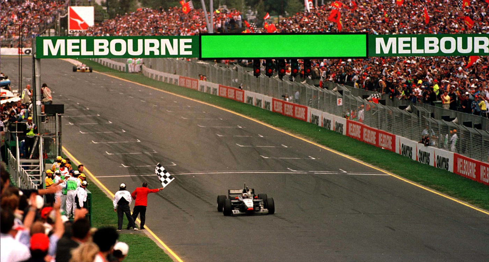
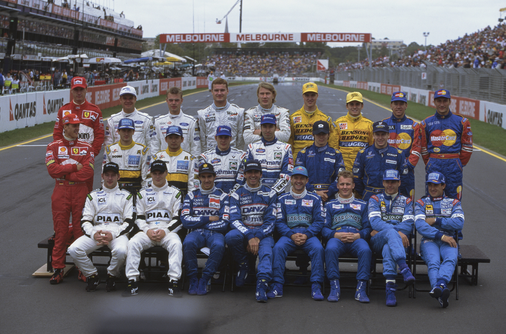
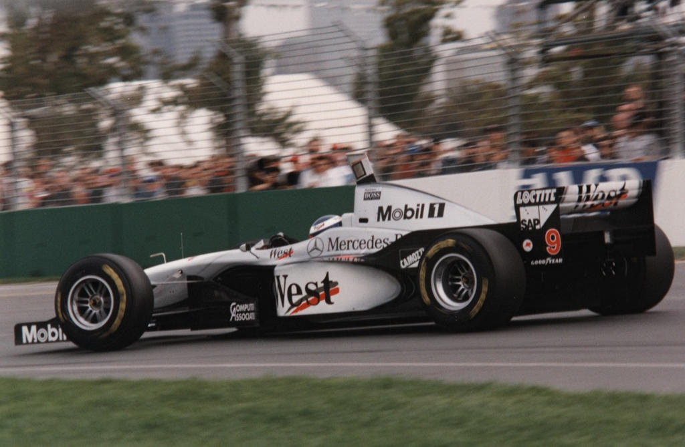

FLECHAS DE PRATA FINALMENTE OURO

Villeneuve repete pole, mas Irvine provoca seu abandono, e de Herbert logo na 1ª curva. Frentzen domina, mas depois de longa 2ª parada, abandona com freio explodido. Coulthard, 1º e Hakkinen, 3º, ouro para McLaren-Mercedes. Schumi 2º. Primeiros pontos para a Prost e a Bridgestone com Panis.
Por Francisco Santos
Um novo ano, alguns carros novos, mas tudo continua na mesma, com a mesma superioridade dos Wiiliams dominando treinos e corrida. Jacques Villeneuve repetiu a pole do ano anterior. No entanto, largou mal e foi posto fora da prova logo na primeira curva por um sempre impetuoso Irvine. Frentzen mostrou para o que veio e foi aumentando sua liderança, parecendo certa sua vitória apesar da diferente estratégia de duas paradas.
Um novo fator – pneus
No entanto, este ano passamos a ter um novo fator – pneus mais macios devido à entrada da Bridgestone na F1. A aderênda aumentou, os tempos baixaram cerca de 3 segundos por volta, e as distâncias de frenagem diminuíram ainda mais, obrigando os freios a esforços adicionais. Se todos os carros e pilotos beneficiaram e sofreram，os Wiliams, sempre os mais equilibrados, sofreram ainda mais, pois seus pilotos podiam frear ainda mais tarde, provocando ainda mais desgaste.
A volta da McLaren
Foi essencialmente por isso que a McLaren pode finalmente regressar às vitórias, neste mesmo país onde três anos e quatro meses antes Ayrton Senna tinha lhe dado sua última vitória na F1. Não fosse o maior desgaste nos discos de freio dos Williams, e Frentzen, mesmo perdendo 6s na sua segunda parada de box, poderia ter ganho esta prova. No entanto, quando seguia em segundo, a duas voltas do final, um freio dianteiro explodiu, o que o fez rodar e abandonar. Um “Flecha de Prata” ganhava sua primeira prova desde 1955. Fortuitamente, mas com o mérito de Coulthard ter feito uma prova sempre em excelente ritmo, jamais cometendo um erro e conseguindo manter-se na frente de um Schumacher com uma Ferrari mais competitiva que um ano antes.
O inferno de Hill
No extremo oposto, da sorte, do destino e do grid, o campeão mundial Damon Hill, ostentando seu número 1 no Arrows-Yamaha, quase, quase não se qualificava para o gríd, não fosse uma soberba performance do piloto. No entanto, no domingo à tarde, não percorreu nem uma volta: ficou logo na volta de apresentação. Triste para um campeão. No entanto, como de costume, Damon foi um senhor, na sua modéstia e postura. Pedro Paulo Diniz também foi vítima desta falta de competitividade dos Arrows. Conseguiu apenas um lugar no grid depois de Tom Walkinshaw ter apelado para um artigo do regulamento desportivo que permite a repescagem, em casos excepcionais, de quem tenha feito mais do que o limite de 107% do tempo do pole, mas que em outras sessões tenham feito tempo melhores.
Ídolos e estréias auspiciosas
Para a Fórmula 1 é ótimo recuperar nomes como Alain Prost e Jackie Stewart. O esporte e o espetáculo precisam de ídolos, e, infelizmente, Schumacher fora da Alemanha só é ídolo porque ganha numa Ferrari…
A estréia de Prost e Stewart como donos de equipes veio recuperar para a F1 a aura de Figuras com reconhecido carisma. Para o francês não podia ter sido melhor com o 5º lugar de Panis conquistou os primeiros pontos da equipe recém nomeada (ex-Ligier) e ofereceu-os à Bridgestone, o que não é pequena coisa para uma marca de pneus que estréia na categoria. Nakano foi 7º. Para a Stewart Grand Prix a estréia, embora não tenha trazido um bom resultado, mostrou com o 11º tempo de Barrichello nos treinos e o seu 9º ao abandonar, que estão no caminho certo.
Lola – uma vergonha
Não se admite que uma marca como a Lola traga para um GP um carro que fique a 11,6 s da pole! Eric Broadley, dono e principal engenheiro-projetista da Lola, deveria ter vergonha! E simplesmente degradante para o esporte. Os principais problemas foram falta de estabilidade, e software inadequado do câmbio semi-automático.

OS TREINOS
Surpresa logo na sexta-feira: Michael Schumacher foi o mais rápido, seguido de Frentzen e Alesi. Mas, maior surpresa viria no sábado: a supremacia dos williams, especialmente Villeneuve, foi assustadora para todos, que pensavam terem se recuperado no inverno um pouco de sua desvantagem para os superiores campeões. Apenas para os arquivos históricos: a primeira rodada do ano foi a de Johnny Herbert, e a primeira batida a de Eddie Irvine e Mika Hakkinen. Muitas rodadas e saídas de pista no sábado de manhã para Ralf Schumacher, e um tempo recorde para Villeneuve, 1m28,594s, o melhor de todo o fim de semana, e 3,777s melhor que sua pole de 1996! Estava dado o tom do andamento deste ano: por muito que os regulamentos técnicos da FIA restrinjam a carga aerodinâmica, os tempos vâo sempre descer. Aindu mais, com a chegada da Bridgestone e a nova Guerra de Pneus. Desde que Mansell (Williams/Renault) conquistou a pole em Spa, em 1992, com 2,198s de vantagem sobre Senna (Mclaren/Honda), não houve uma diferença tão grande entre o pole e o segundo. Villeneuve deixou Frentzen a 1,754s. Por isso contribuiram dois fatores: Villeneuve conseguiu seu tempo na sua primeira tentativa feita logo no início da sessáo, muito cedo, e depois não só a pista ficou mais escorregadia com óleo derramado, como a temperatura ambiente subiu. Por outro lado, Frentzen teve azar nas suas três primeiros tentativas, encontrando sempre tráfego em suas voltas rápidas. Apenns a dois minutos do final da sessão conseguia tirar quase dois segundos ao seu tempo, e subir de sétimo para segundo no grid. Mais surpreendente ainda: o primeiro não-Williams, Michael Schumacher, ficou a 2,1s de Villeneuve. Os Benetton, que durante o inverno fizeram os melhores tempos, tiveram performance medíocres. A realçar: os Minardi bateram os Tyrrel e os Arrows; oito primeiros lugares do grid para os Goodyear (Panis em 9º); 11º para Barrichcllo na estréia do Stewart; desesperante andamento dos Lola, fora do grid; repescagem de Diniz.

A CORRIDA
Pensando no maior desgaste dos freios, a Williams decidiu fazer duas puradas de box, ao contrário da maioria que fez apenas um reabasteamento. Não que tivesse de trocar de pneus, mesmo optando pelos mais macios, como todos à exceção da Ferrari devido ao seu chassis menos equilibrado gastando mais pneus. Mas. porque assim, seu carro andaria mais tempo mais leve, com menos gasolina. No entanto, cada parada de box é sempre um risco a mais. De novo algo correu mal no box da Williams: um parafuso de roda obrigou a um atraso de mais seis segundos, que acabou sendo fatal, pois Frenlzen voltou em terceiro e teve de recuperar essa desvantagem para Coulthard e Schumacher. Depois, quando tentava recuperar a liderança. Frentzen foi lembrado pelo box que seus freios poderiam dar problema. Moderou o andamento depois da parada, mas teve de recuperar e se quizesse passar Coulthard, teria de acelerar. Foi fatal para seus freios dianteiros. A duas voltas do final o direito explodiu, jogando o carro para fora da pista e da prova. Villeneuve, o nítido favorito, já tinha sido também jogado fora da pista logo na primeira curva, por um desvairado Irvine. Depois de atravessar as pista da esquerda para a direita. O irlandês tentou passar Coulthard e Villeneuve pelo lado direito e sujo da pista com uma Ferrari mais pesada (previsto apenas um reabastecimento). Foi mais uma de suas manobras suicidas. Tocou no Williams de Villeneuve, que desviou para a esquerda, e bateu no Sauber de Herbert. Abandono dos três. Será que Villeneuve teria durado a distância, e teria sabido administrar seus problemas de freios? Provavelmente não. Sua má largada foi decisiva para a prova.

Prova emocionante
Apesar do maior rendimento dos Williams, foi um fim de semana emocionante, e uma corrida cheia de interesse esportivo e técnico. Schumucher, por exemplo, até poderia ter ganho. E, os jovens leões da Jordan-Peugeot andaram bem, mas evidenciaram sua inexperiência. O Sauber de Herbert confirmou os tempos dos testes. Teríamos assistido uma luta final emocionante entre Coulthard e Schumi caso o alemão não tivesse tido de fazer um reabastecimento não previsto. A desculpa oficial foi que o sistema de reabastecimento não funcionou bem na primeira parada e não entrou toda a gasolina. As más línguas garantem que o erro teria sido de Ascanelli, o chefe de box, o que lhe terá custado seria advertência e possível afastamento do cargo. Com Jean Alesi o caso foi mais grave: parou no circuito sem gasolina! Durante três volta o box da Benetton o avisou que deveria parar para reabastecer, mas o francês não obedeceu. Desculpa oficial: o piloto não viu o painel do box e o sistema de rádio teve intermitências. Por que motivo então Flavio Briatore ficou tão bravo com o piloto?…